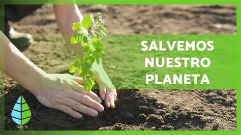

PROTECCIÓN DE LOS BOSQUES
Los bosques son uno de los ecosistemas más importantes y biodiversos del planeta. Son indispensables para la
vida en la Tierra, ya que proporcionan alimentos, agua limpia, oxígeno y refugio para muchas especies. Cuidar los bosques es esencial para proteger nuestra flora
y fauna, mantener el equilibrio ecológico y mitigar el cambio climático.
La relevancia de preservar los bosques en los Ecosistemas.
La relevancia de preservar los bosques en los Ecosistemas es indiscutible. Los bosques son ecosistemas fundamentales que albergan una gran diversidad
de especies y desempeñan un papel crucial en el equilibrio de la Tierra.
Los bosques actúan como pulmones del planeta, ya que a través de la fotosíntesis liberan oxígeno y capturan dióxido de carbono, contribuyendo así a
regular el clima global y mitigar el cambio climático. Además, los bosques son hábitats naturales para numerosas especies, incluyendo plantas, animales y
microorganismos. La biodiversidad que albergan es extraordinaria y cada uno de los seres vivos desempeña un papel único y vital en el funcionamiento de los
ecosistemas.
La conservación de los bosques también es esencial para mantener la calidad del agua. Los bosques actúan como filtros naturales, atrapando sedimentos
y contaminantes antes de que lleguen a los ríos y acuíferos, asegurando la provisión de agua limpia para el consumo humano y la vida acuática. Asimismo, los
bosques proporcionan recursos naturales indispensables para la supervivencia humana. Son fuentes de madera, alimentos, medicinas, combustibles y otros productos
forestales no maderables, que son utilizados por comunidades locales y para diversas actividades económicas.
En conclusión, los bosques son componentes esenciales de los ecosistemas y su preservación es fundamental para garantizar el equilibrio de la naturaleza y
el bienestar humano. Su conservación no solo beneficia a la biodiversidad y al clima, sino también a las comunidades locales y a futuras generaciones.
¿Por qué son importantes los bosques?
Los bosques son fundamentales para mantener el equilibrio de los ecosistemas. Son hábitats ricos en biodiversidad que albergan una gran cantidad de especies
de plantas, animales y microorganismos.
Contribuyen a la regulación del clima al almacenar grandes cantidades de carbono y emitir oxígeno a través de la fotosíntesis. Además, actúan como
filtros naturales al purificar el aire y el agua, ayudando a reducir la contaminación. Los bosques también protegen los suelos de la erosión y evitan las
inundaciones al absorber el agua de lluvia. Asimismo, proporcionan recursos naturales importantes para el ser humano, como madera, alimentos, medicinas y productos
forestales no maderables.
Además, los bosques son espacios recreativos que ofrecen oportunidades para el turismo y el contacto con la naturaleza. También tienen un valor cultural y espiritual,
ya que en muchas culturas los bosques son considerados sagrados y se les atribuye un significado especial.
Lamentablemente, los bosques están amenazados por la deforestación, la tala ilegal, los incendios forestales y la expansión de actividades humanas no sostenibles.
Esto pone en peligro la biodiversidad, el ciclo del agua, el clima y la calidad de vida de las comunidades que dependen de ellos.
Por tanto, es esencial promover la conservación y la gestión sostenible de los bosques, incluyendo la protección de áreas naturales, la reforestación y la
implementación de prácticas forestales responsables. Solo así podremos asegurar la supervivencia de los bosques y los beneficios que nos brindan en
términos de biodiversidad, medio ambiente y bienestar humano.
¿Cuáles son las acciones que debemos tomar para preservar nuestros bosques?
- Fomentar la educación ambiental:
Es esencial crear conciencia sobre la importancia de los bosques y su conservación. Promover la educación
ambiental desde temprana edad, tanto en escuelas como en la comunidad, ayuda a generar conocimiento y compromiso con la protección de estos ecosistemas.
- Implementar políticas de conservación:
Los gobiernos y otras entidades responsables deben establecer y ejecutar políticas que protejan los
bosques y regulen su uso sostenible. Esto implica la creación de áreas protegidas, restricciones a la deforestación y promoción de prácticas forestales sostenibles.
- Promover la reforestación:
La reforestación consiste en plantar árboles en áreas donde se han perdido bosques. Esta acción ayuda a restaurar
los ecosistemas y a recuperar la biodiversidad. Es importante llevar a cabo programas de reforestación tanto a nivel comunitario como a nivel nacional.
- Combatir la deforestación:
La deforestación es una de las principales amenazas para los bosques. Para combatirla, es necesario controlar
y reducir la tala ilegal, promover prácticas agrícolas sostenibles y buscar alternativas económicas que no dependan de la explotación forestal.
- Promover el consumo responsable:
Como consumidores, podemos contribuir a la preservación de los bosques al elegir productos con certificaciones
de manejo forestal sostenible. Optar por papel reciclado, madera certificada y evitar la compra de productos que provengan de áreas deforestadas es una poderosa
forma de manifestar nuestro apoyo a la conservación de los bosques
- Valorar los servicios ambientales:
Los bosques brindan una amplia gama de servicios ambientales, como la regulación del clima, la
conservación del agua y la protección de la biodiversidad. Reconocer y valorar estos servicios nos motiva a protegerlos y a buscar soluciones sostenibles
en otros sectores, como la agricultura y la industria.
REFORESTACIÓN
Se denomina reforestación al hecho de repoblar un territorio con árboles. Generalmente, dicho territorio estaba en su pasado reciente (anteriores
años aproximadamente) poblado de árboles y bosques que fueron deforestados por distintas posibles razones, como construcción de infraestructuras, crecimiento de
zonas urbanas, el aprovechamiento de la madera con fines industriales o de consumo, aumento de los límites agrícolas y ganaderos o bien, se destruyeron por diversos
factores como los incendios u otros desastres, bien sean provocados, accidentales o por fenómenos naturales.
Lo ideal en la reforestación es que las especies sean autóctonas, aunque también pueden traerse de otros lugares, pero lo mejor es que sean árboles de crecimiento
rápido. En general, sembrar y reforestar tierras en mal estado tiene un efecto positivo, por la mejora ambiental y de los recursos.
Cuál es la importancia de la reforestación y los árboles
La reforestación es una acción imprescindible para la supervivencia del hombre y otros seres vivos en este planeta. Algunas de las funciones más importantes
de los árboles y los bosques, y que pueden entenderse como parte de la propia importancia de la reforestación, son:
Los árboles (y las plantas) realizan la fotosíntesis. En este proceso, utilizan parte del dióxido de carbono que nosotros emitimos al respirar o en
nuestras actividades diarias y lo transforman en oxígeno, entre otros productos. Por lo tanto, la reforestación es importante para la producción de oxígeno en
nuestro planeta y así abastecer a los seres vivos que en él habitan.
Los árboles de las grandes extensiones boscosas tienen la capacidad de atrapar y eliminar partículas contaminantes como polvo, polen, humo y cenizas
que pueden resultar perjudiciales para nuestros pulmones.
Los árboles con su efecto de utilizar y convertir el dióxido de carbono en oxígeno, ayudan a disminuir el efecto invernadero en nuestro planeta. Este efecto se crea
porque los gases como el CO2 y otros hacen que el calor de la Tierra se retenga en la atmósfera y no sea liberado, contribuyendo al aumento del calentamiento global.
Los árboles son agentes importantes para asegurar la conservación del agua y disminuir la erosión del suelo. Gracias a la reforestación, conseguimos
frenar las corrientes de aguas torrenciales en el suelo y reducir la erosión y sedimentación de los ríos.
Los árboles y los bosques sirven de hábitat de gran diversidad de especies en la Tierra, entre ellos los organismos descomponedores, aves o distintas
especies micológicas. Con la reforestación, recuperaríamos esta biodiversidad perdida en esa zona y que es realmente necesaria.
Los árboles reducen el llamado efecto isla térmica o isla de calor, que se da en las ciudades como consecuencia de la retención de calor por materiales
como el hormigón y otros. De esta manera, las reforestaciones pueden modificar el clima local y bajar un poco las temperaturas.
Objetivos de la reforestación
Construcción de viveros y producción de plantas.
Repoblación de áreas verdes.
Identificar el avance de las dunas de arena.
Producción de madera, celulosa, fruta, fibras o combustibles.
Preservar el suelo de la erosión y mejorar la cuenca hidrográfica.
Establecer áreas protegidas para el ganado, usando las técnicas de producción intensiva.
Formar zonas de protección contra la acción del viento y así resguardar los cultivos.
Tener una fuente de madera para producción de energía doméstica.
Construir espacios de ocio.
Cómo ayudar a la reforestación
Contacta con asociaciones y proyectos que tengan en marcha campañas de reforestación de bosques o áreas similares para apuntarte como voluntario.
Conoce qué tipos de árboles para reforestar son los mejores en tu zona. Algunos árboles de crecimiento rápido que son buenos para reforestar
son: el álamo, el plátano, el fresno, el sauce, el aguaribay y la casuarina. No obstante, deprendiendo del terreno y el clima puede
convenir más una especie u otra.
Aprende a plantar árboles por tu cuenta para plantarlos cerca de la zona en la que vives o, incluso, en tu jardín.
Dona dinero a asociaciones que plantan árboles por todo el mundo. Estas, por cada cierta cantidad de dinero donado, que no suele
ser mucho, plantan un árbol en tu nombre y te muestran fotos y estadísticas de su crecimiento y del CO2 compensado año tras año.
Colabora para evitar las causas de la deforestación indiscriminada.
Qué problemas hay para la reforestación: los obstáculos
Los principales problemas para la reforestación, es decir, sus obstáculos, vienen dados por la actividad humana, que tala bosques
indiscriminadamente para obtener materia prima para distintas actividades o urbanizar la zona. Otro problema son los incendios forestales,
aunque algunos son accidentes naturales, otros muchos son provocados por el hombre.
Por lo tanto, es necesario concienciar a la sociedad de que la reforestación es un arma para mantener en buen estado los llamados
pulmones de la Tierra, si no queremos que la calidad de vida de todos se vea claramente perjudicada.
